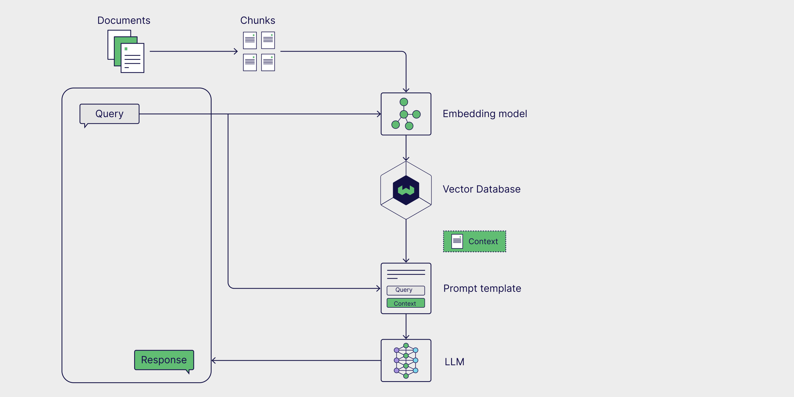
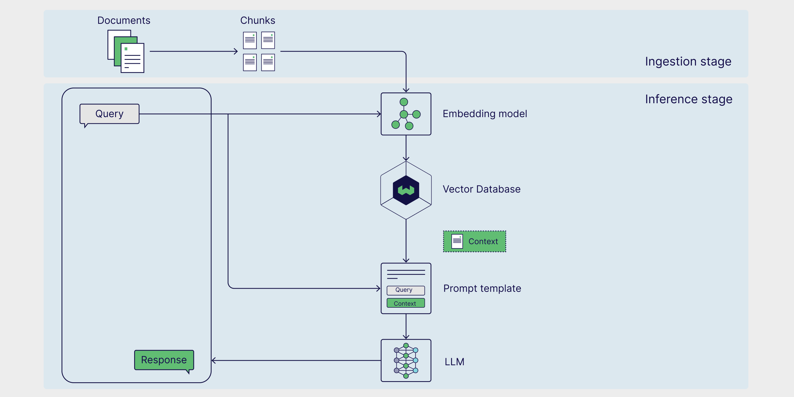
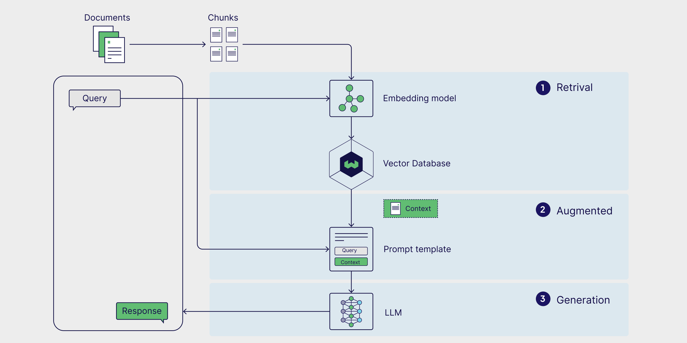
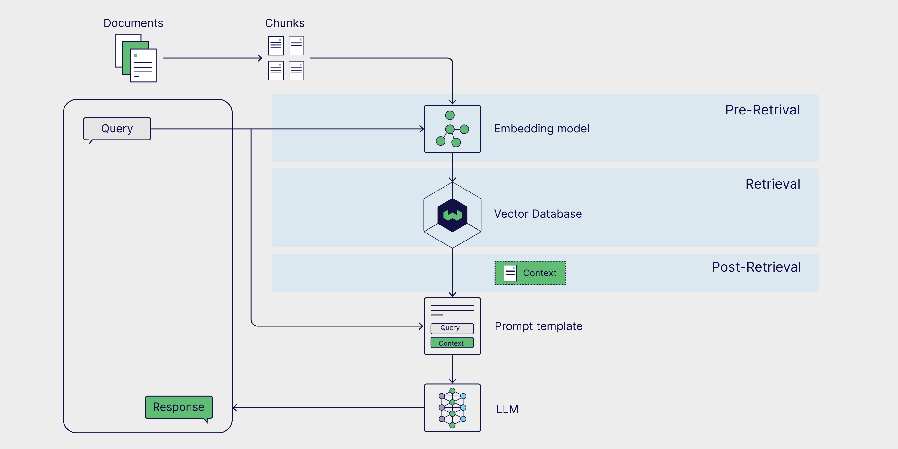
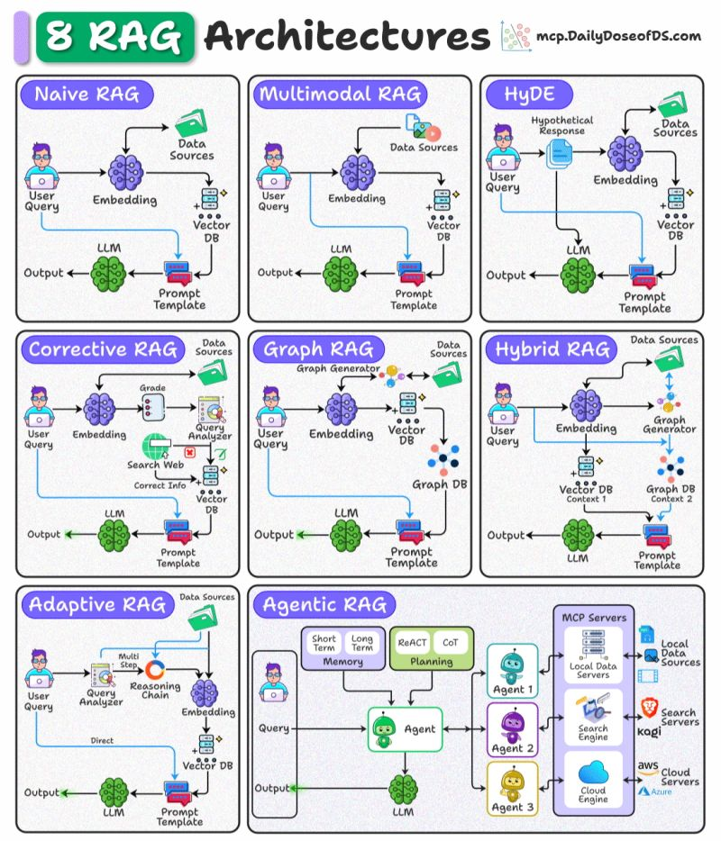
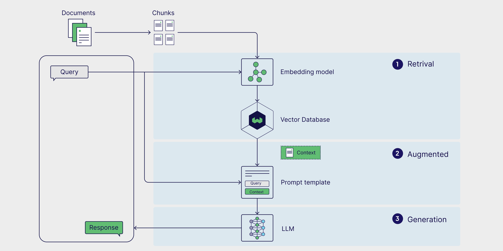
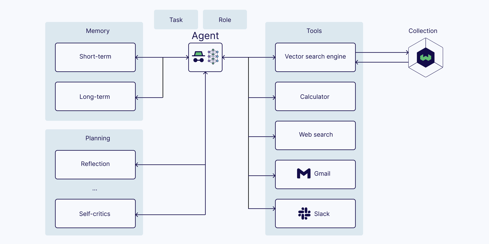
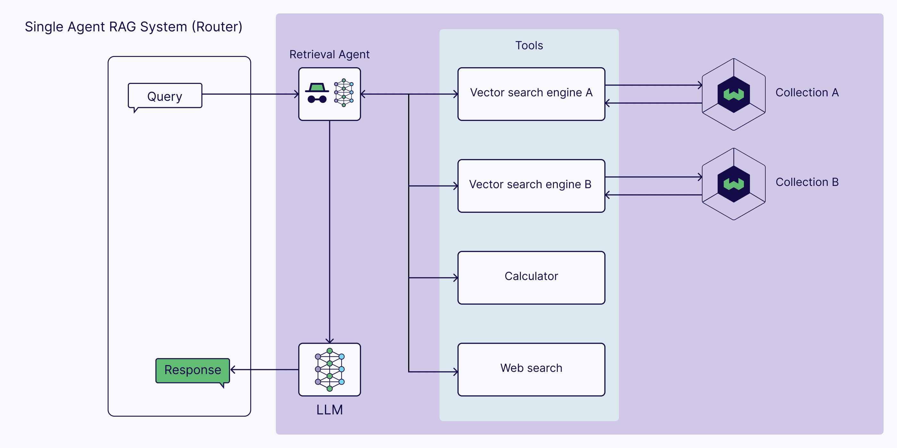
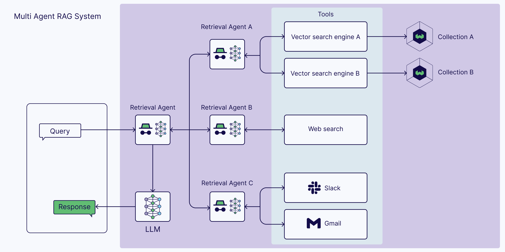
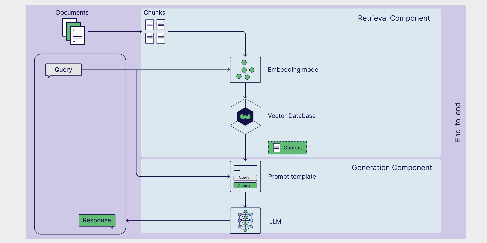

RAG retrieves external context at inference time, grounding LLM answers in up-to-date, private, or domain-specific knowledge without retraining. Production RAG includes ingestion, retrieval quality controls, prompt augmentation, generation, evaluation, and sometimes agents.
RAG combines an external knowledge source, a prompt template, and a generative model. The model keeps its parametric knowledge, but the answer is conditioned on non-parametric context retrieved from files, databases, web pages, scientific literature, or personal/work data.

The original research formulation is Retrieval-Augmented Generation for Knowledge-Intensive NLP Tasks.
Ingestion prepares the knowledge base: parse files, clean text, chunk documents, create embeddings, store vectors and metadata, and preserve source provenance. Inference answers a query: embed the query, retrieve relevant chunks, place them into a prompt template, generate an answer, and optionally cite or validate sources.




Embed query, retrieve top-k from a vector database, inject into prompt, generate.
Retrieve across text, images, audio, or video using modality-aware encoders.
Generate a hypothetical answer document, embed it, then retrieve real documents.
Analyze and correct retrieved context using trusted sources or web search.
Use entities and relationships to support multi-hop reasoning across documents.
Combine dense retrieval with graph, keyword, or structured retrieval.
Route easy queries directly and decompose complex ones into retrieval chains.
Let an agent decide what to retrieve, when, from where, and whether to retry.
Vanilla RAG is usually one-shot. Agentic RAG adds a controller that can plan, route, call tools, evaluate retrieved context, and retry.


The ReAct control loop is a common foundation: thought, action, observation, repeat. See ReAct: Synergizing Reasoning and Acting in Language Models.
| Capability | Vanilla LLM RAG | Agentic RAG |
|---|---|---|
| External tools | Usually no | Yes |
| Query preprocessing | Fixed | Agent can rewrite or decompose |
| Multi-step retrieval | No | Yes |
| Validation | Limited | Agent can evaluate and re-retrieve |
| Cost/latency | Lower | Higher |



| Layer | Question |
|---|---|
| Retriever accuracy | Did retrieval return documents that answer the query? |
| Retriever relevance | Are the chunks specific enough for the user's need? |
| Generator faithfulness | Does the answer stay grounded in retrieved context? |
| Generator correctness | Is the answer factually right against ground truth? |
RAGAS is a common evaluation framework, and Evaluation of Retrieval-Augmented Generation: A Survey is a useful map of the literature.